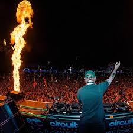

I listen to a lot of house and electronic music. These are a few of my favorite DJs
Their songs always put me in a good mood. I like how they each have their own sound but still make music that work when going out or just hanging out.
Thanks for checking out my page!